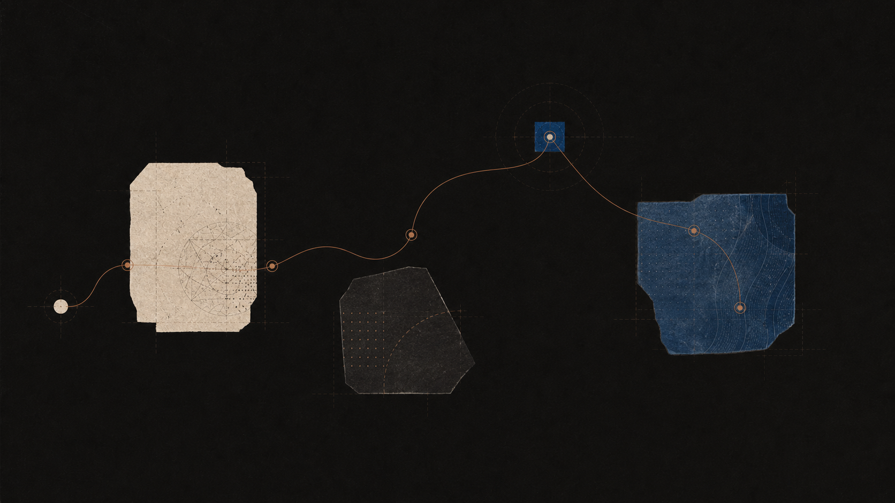

Understanding begins with a question.
Follow a thought through dialogue, recall, and connection.

Questions become a field of study.
Trace a difficult subject through dialogue, recall, and the connections that make it useful again.
Questions become a durable learning practice.
Socrates meets you where you are, challenges your assumptions, and helps you build understanding that lasts.
Announcements
What we are making next.
Product changes, experiments, and the small decisions that make practice clearer.
Learn
Keep a better set of questions.
Guides and small learning paths for a more deliberate practice.
Research
Study how understanding holds.
Explorations into explanation, memory, and the conditions that help ideas stay.
The product
A tutor that stays with the question.
Ask in your own words. Test the edges of an idea. Return to the useful connection when you need it again.
